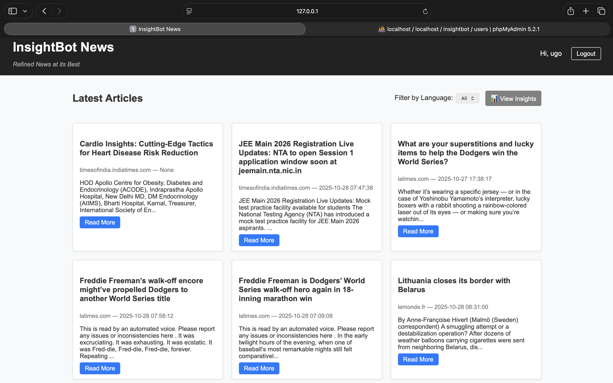
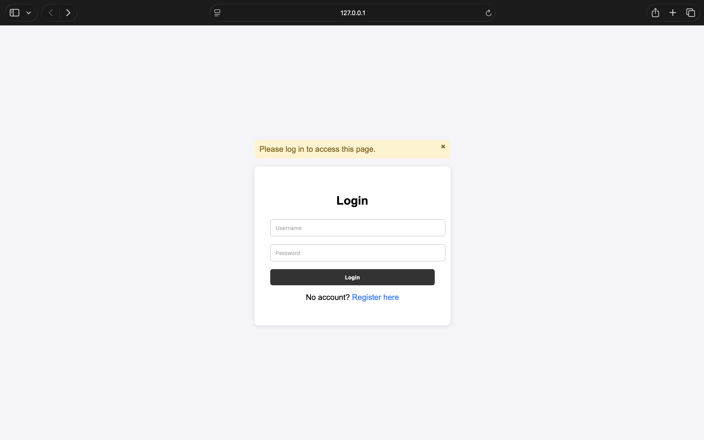
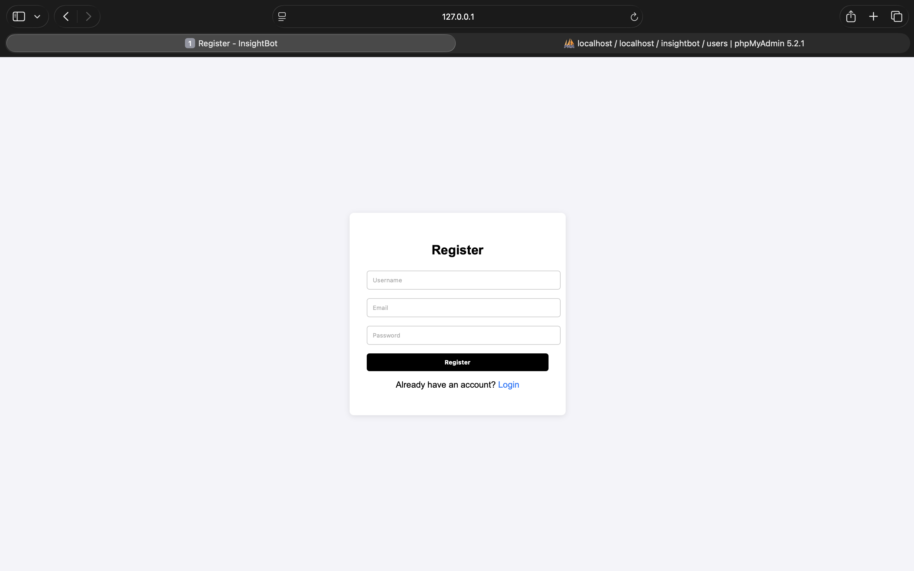
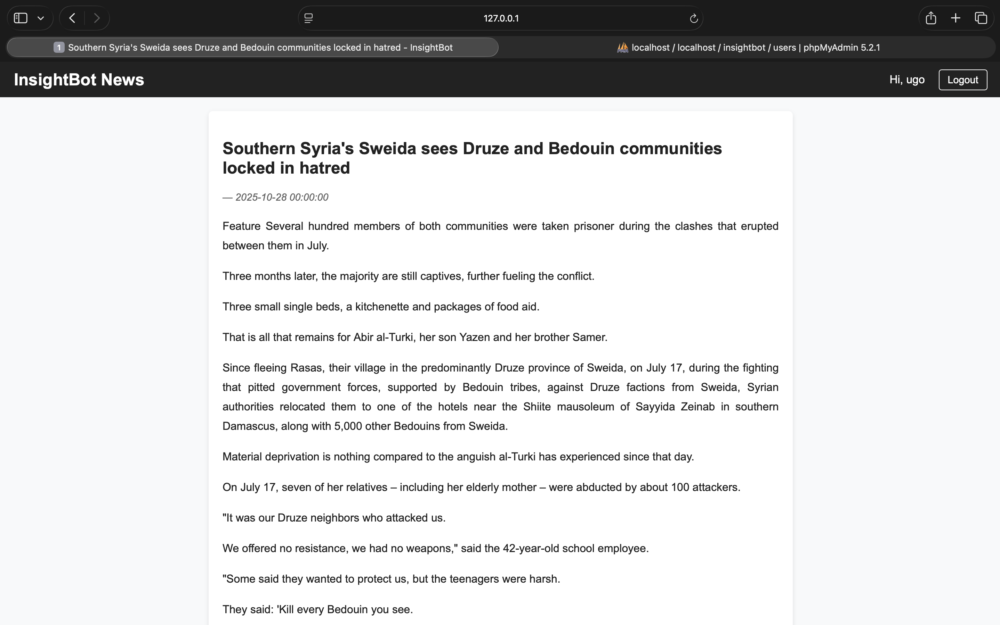
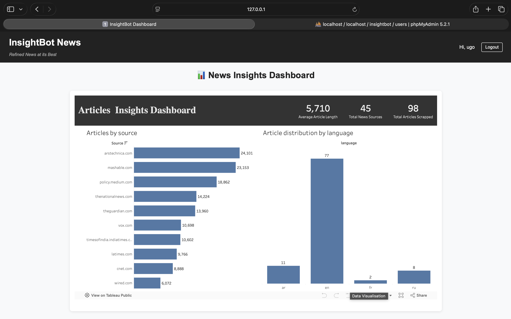

A full-stack, data science–driven news aggregation and insight platform that extracts, structures, and visualizes global news trends across multiple sources and regions.
InsightBot was developed as part of the TechWiz 6 – Data Science Dominion competition. The goal was to design an intelligent system capable of automatically extracting unstructured news data from the web and transforming it into structured, analyzable insights.
The project integrates web scraping, data validation, database storage, API exposure, user authentication, and interactive visualization into a single, end-to-end data product.
Impact: InsightBot demonstrates how data science extends beyond modeling into system design, data engineering, and interpretability—delivering insights rather than raw data.
At the start of the project, we deliberately avoided jumping straight into tools or code. Instead, we focused on understanding the real problem the SRS was pointing toward.
The real problem was not building a scraper or a dashboard, but transforming unstructured, noisy, multilingual news data into structured insights that help users understand trends rather than individual articles.
The SRS emphasized aggregated news trends, topic frequency, automated extraction, and visualization for insight rather than browsing.
From this, we derived implicit technical requirements such as cross-site generalization, article validation, date normalization, Tableau-compatible structuring, and explainability during defense.
Browser automation was intentionally avoided due to fragility, performance overhead, and lack of explainability. Instead, a pattern-based HTML parsing approach was used.
Article validation required multi-layer heuristics including URL patterns, content length, paragraph counts, and container scoring.
A key decision was accepting false negatives over false positives to preserve analytical integrity.
Only information essential for trend analysis was extracted: headline, body text, source, and publication date.
Language detection was included at the data level for extensibility, even when visualization constraints limited its immediate use.
CSV was used for transparency and inspection, while MySQL supported querying, API access, and Tableau integration.
A Flask application was introduced to demonstrate system usability, support authentication, and separate exploration from analytics.
Tableau was treated as a lens for insight. The dashboard focused on frequency, trends, and clarity rather than visual density.
Limitations such as date inconsistencies, blocked sites, and Tableau constraints were documented transparently and mitigated where possible.
InsightBot demonstrates systems thinking, data engineering under uncertainty, and decision-driven data science. The core lesson was that strong data products are built through structure, trade-offs, and clarity — not complexity.
The homepage serves as the primary entry point for users. It displays the latest extracted news articles in a card-based layout, allowing users to quickly scan headlines, preview article content, and navigate to detailed views.

InsightBot implements a secure authentication system that allows users to register and log in before accessing the platform. This ensures controlled access to content and administrative features.


Administrative users are granted additional privileges, such as approving new user accounts and managing access.
Individual news articles are displayed in a focused reading view. The article page shows the extracted headline, source, standardized publication date, and structured article paragraphs derived from the original webpage.

The modern news ecosystem produces an overwhelming volume of information across countless platforms and languages. While information availability is high, extracting meaningful insights from this data remains difficult.
InsightBot addresses these challenges by automating content extraction and transforming raw news data into structured, analyzable datasets.
InsightBot extracts live news data from a diverse set of international and regional news websites, ensuring comprehensive coverage across topics and regions.
Each article record includes the URL, headline, full article body, publication date, article length, source domain, and language metadata.
InsightBot follows a modular pipeline-based architecture with five distinct layers:
InsightBot integrates Tableau for interactive analytics and trend visualization. The dashboard allows users to explore aggregated news insights derived from the extracted dataset.

These challenges reflect real-world data engineering constraints and were addressed through validation logic, fallback heuristics, and structured data normalization.
This project was completed collaboratively as part of a team. My primary contributions focused on core data engineering and analysis components of the system.
I worked closely with other team members to integrate backend services, ensure data consistency, and align technical decisions with the overall project goals.
InsightBot demonstrates how data science extends beyond modeling into system design, data engineering, and interpretability. The project highlights the importance of building robust pipelines capable of handling imperfect, real-world data.
Key Takeaway: This experience reinforced the value of asking the right questions, designing scalable systems, and delivering insights rather than raw data. The end-to-end nature of this project showcased the full data science lifecycle.